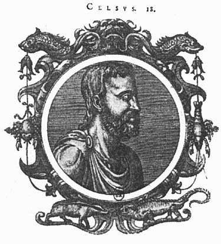
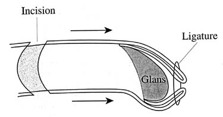
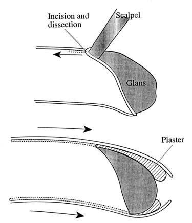
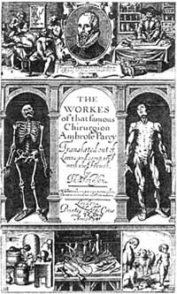
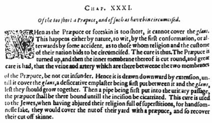
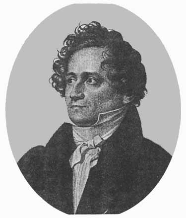
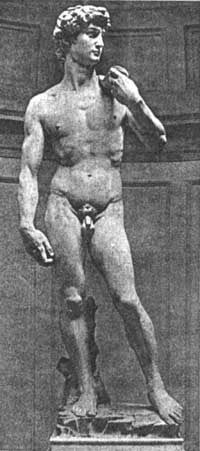

THE CIRCUMCISION REFERENCE LIBRARY
|
Uncircumcision: A Historical Review of Preputial Restoration Dirk Schultheiss, M.D., Michael C. Truss, M.D., Christian G. Stief, M.D., and Udo Jonas, M.D. Hannover, Germany |
|
Throughout history, demands for restoration of the prepuce after circumcision were most commonly related to the political or religious persecution of the Jewish people. The first evidence for such a procedure is mentioned in the Bible: Under the reign of Antiochus IV (168 BC) Hellenistic ideals, such as public nakedness at athletic games or in public baths, emerged in Judea and forced Jews to stretch their shortened foreskins with a special weight, the Pondus Judaeus, to cover the glans (I. Maccabees 1). Similar efforts are reported in the Talmud during the time of Hadrian (132 AD). Celsus (25 BC-50 AD) was the first to give a detailed description of two surgical techniques for uncircumcision in his De medicina libri octo. Subsequent works, for example by Galen (131-200 AD) and Paulus Aeginata in the seventh century, only contained a repetition of these methods without presenting any new aspects. Ambroise Paré gave a new impetus in the sixteenth century, suggesting the insertion of a catheter into the distal urethra to guarantee free passage of urine during postoperative healing. In this past century, Johann Friedrich Dieffenbach was the first to dedicate a whole chapter to the problem of "posthioplastice" in a modern textbook of plastic surgery. Almost no written documents exist of uncircumcision during the Nazi era; nevertheless, surgical treatment seemed to be widespread as every circumcised man was in danger of being denounced as a Jew. Personal reports of patients and doctors performing surgical restoration of the prepuce are presented. Nowadays, reports on surgical foreskin restoration are still rare and alternative methods of nonsurgical skin-expansion have become more common. Several organizations were founded in America against routine infant circumcision and give advice to foreskin restoration seekers. (Plast. Reconstr. Surg. 101: 1990, 1998.) |
|
Circumcision has been widespread since the beginning of civilization and was reported in the medical literature of the earliest cultures. It is not surprising, therefore, that the first illustration of a surgical procedure, a bas-relief from a tomb in Sakkara (Egypt; about 2200 BC), depicted a circumcision scene.)1 In most cases, this procedure was performed with a ritual or religious intention, e.g., as a sacrificial act for a god or as a token of the "covenant" as in Jewish religion. Furthermore, hygienic and medical reasons were of importance at all times. In ancient days, circumcision or even more extensive mutilation of the external genitalia was carried out on defeated enemies, captives, or slaves as a sign of subjugation.2,3 The demand for surgical or nonsurgical restoration of the prepuce after circumcision, the so-called uncircumcision, was usually associated with the persecution of the Jewish people. This association is documented from the times of the Old Testament until the darkest period of our century. By some authors, the procedure of restoring the lost or missing foreskin was called decircumcision (e.g., Celsus) or posthioplasty (e.g., Dieffenbach). Because these terms were partly used for the same operative technique, there is no uniform definition for them; therefore, they are more or less exchangeable.
FIRST WRITTEN EVIDENCE FOR RESTORING THE PREPUCE The first sign of evidence for uncircumcision among the Jews can be seen in a passage of the Old Testament (I Maccabees 1: 14-15): "Whereupon they built a place of exercise at Jerusalem according to the customs of the heathen. And made themselves uncircumcised (sibi praeputia fecerunt), and forsook the holy covenant, and joined themselves to the heathen, and were sold to do mischief."4,5 This passage was written at the time of the reign of Antiochus IV (168 BC), when the hellenization of Palestine and, therefore, the oppression of the Jewish religion and culture came to a first climax. Hellenistic ideals gained popularity, and it was, for example, common to exhibit the naked body at athletic games or at public baths. Jews were forced to hide their genitalia or restore their prepuces, so as not to be persecuted and to improve their social and economic position. This situation culminated in a law by Antiochius dictating that the act of circumcision was to be punished by death sentence (I Maccabees 1:63-64). The restoration of the prepuce was either done operatively, as it will be described below, or bloodlessly with the help of the so-called Pondus Judaeus. Both methods took advantage of the common way of symbolic circumcision among Jews at that time, the milah. Only the distal part of the foreskin was cut off, leaving a short prepuce that partly covered the glans. The Pondus Judaeus was a special weight made of bronze, copper, or leather, which was fixed to this rudimentary preputial skin and pulled it downward. When it was applied for a longer period, the foreskin was lengthened and covered the glans totally as desired.3,6,7 This device could, therefore, be referred to as an ancient tissue expander, rather a tissue stretcher, keeping in mind that similar methods for uncircumcision are still offered in our days. Unfortunately, no detailed description or illustration of such a Jewish weight exists. The successful Jewish revolt against Antiochus IV in 141 BC led to the establishment of the Hasmonean or Maccabean reign in Judea, making uncircumcision unnecessary for the following period. Later in 63 BC, the Romans took over the supreme authority and, together with the rise of Christianity, a new desire for hiding the state of circumcision appeared. Obviously, many Jews who converted to the Christian religion underwent uncircumcision to emphasize the break with their old religion and to be fully accepted in the Christian community. The Apostle Paul condemned this practice by saying: "Is any called being circumcised? Let him not be uncircumcised. Is any called being uncircumcised, let him not be circumcised" (I Corinthians 7:18). The Roman tolerance toward circumcision among Jews came to an end with the hellenophilic emperor Hadrian, who was proclaimed emperor in 117 AD and once again urged a law forbidding circumcision. The Talmud gives proof that during his reign many of the circumcised turned to uncircumcision for obvious reasons.8 This habit was rejected by orthodox Jews and, therefore, after the law against circumcision was loosened again about 140 AD, they introduced radical circumcision to the Jewish community, the so-called periah. It left the glans totally uncovered and made it almost impossible to perform the above-mentioned methods of restoring the prepuce.3,7 In Greek terminology, a person who had undergone the procedure of stretching the prepuce was known as epispastikós, the stretched one (epispasmós = pull-over). Similarly, the Romans addressed him as recutitio, the reskinned (cutis = skin), not differentiating by this term whether it was done surgically or nonsurgically.3 Uncircumcision is also mentioned in Roman poetry of the first century. Petronius (died 66 AD) in Trimalchio's Dinner from his work Saturae told us of a slave who had "two defects, without which he would be priceless: he is reskinned and he snores (recutitus est et stertit)."3 In one of his epigrams (Epigrammaton Libri 7:30) Marcus Valerius Martialis (38/41-100 AD) portrayed a Roman prostitute named Caelia.3-5 She was never pleased by a Roman man but preferred to make love to Parthians, Germans, Dacians, Cilicians, Cappadocians, Egyptians, and Indians.3-5 This list is continued with the passage, "Nor do you shun the reskinned Jewish private parts (recutitorum inguina Judaeorum)." Martial also mentioned the Pondus Judaeus and gave a short description of it (Epigrammaton Libri 7:35).
|
|
CELSUS' METHODS OF OPERATIVE UNCIRCUMCISION The first detailed description of an operative procedure for uncircumcision was given by the Roman medical writer Aulus Cornelius Celsus (25 BC-50 AD), seen on a later portrait in Figure 1. His comprehensive encyclopedic work De medicina libri octo was written during the reign of Tiberius (14-37 AD). It can be valued as the most important written document in the early history of medicine, which was not questioned until the scientific innovations of the Renaissance established modern medicine. In De medicina 7:25:1 he differentiated between two methods of prepuce reconstruction, which he referred to as "decircumcision."9  FIG. 1. Aulus Cornelius Celsus (25 BC-50AD) (from: Sambucus, Icones veterum aliquat ac recentium medicorum, 1574). The first procedure he recommended mainly for children or for those with a congenitally shortened foreskin (Fig. 2). The skin of the penis was incised around the root and after mobilization, stretched over the glans. Ligation at the tip prevented any recession into the original position. Thus a physiologic double-layered prepuce was reconstructed, and the proximal skin impairment was reepithelialized during the course of the healing process.  FIG. 2. Celsus' first method of "Decircumcision" (after: Rubin, J.P. Celsus' Decircumcision Operation. Urology 16: 121, 1980). |
|
If the patient had been circumcised after the customs of certain races (qui quarundam gentium more circumcisus est), mainly the Jewish milah, Celsus suggested the second method. A coronary incision was made, and the penile skin was mobilized along the whole length of the penis to the root (Fig. 3, above). The skin was thus stretched over the glans and recession was now prevented by means of a bandage fixed securely over the penile shaft from the pubis to the glans (Fig. 3, below). Only a single layer of skin was obtained over the glans, and adhesion was counteracted by the application of additional saturated dressings and plasters. To avoid an erection during the healing period, Celsus advised a strict diet. The indication for the procedure of uncircumcision was described by him as decoris causa, an aesthetic reason without any medical necessity.8,9  FIG. 3 Celsus' second method of "Decircumcision" (after: Rubin, J.P. Celsus' Decircumcision Operation. Urology 16: 121, 1980). Celsus did not point out the possible risks and failures of his methods. It is unlikely that he never experienced severe wound infection performing this kind of genital surgery and not knowing the principles of asepsis. Furthermore, both methods suggest a significant risk of postoperative failure, as, e.g., Dieffenbach pointed out in his comment on Celsus work.10 When the new prepuce is not permanently tightened at its tip, retraction of the scars may pull the skin backward with the glans remaining uncovered again. A simple dressing might not be able to prevent this effect until wound healing is completed.6
MEDICAL LITERATURE FROM GALEN TO DIEFFENBACH A complete review on the medical
literature dealing with uncircumcision is given in
the remarkable Zeis Index of 1863, a detailed
history of plastic surgery by the surgeon and
historian Eduard Zeis from Dresden.4 He had also introduced the term
plastic surgery (Plastische Chirurgie) into
the medical terminology with the first textbook on
this subject in 1838.11 The
following text presents the important and relevant
highlights of the history of uncircumcision; in
addition Table I gives a more extensive overview of
medical authors dealing with foreskin restoration
between the second and the nineteenth century: |
|
TABLE I Overview of Medical Authors Dealing with Uncircumcision from the Second Century AD to the Nineteenth Century (According to the "Zeis Index")
|
||
| Claudius Galenus | 131-200 AD | Methodus medendi; Lib. XIX |
| St. Epiphanius | 4th century | De ponderibus et mensuris liber |
| Paulus Aegineta | 7th century | Lib. VI; Ad tegendam glandem colis si nuda est |
| Gabriel Fallopius | 1523-1562 | De praeputii brevitate corrigenda |
| Ambroise Paré | 1510/17-1590 | Opera chirurgica; De curtiore praeputio, deque Recutitis |
| Fabricius ab Aquapendente | 1537-1619 | De chirurgicis operationibus; Ad tegendam colis glandem detectam |
| Johann von Jessen | 1601 | Institutiones chirurgicae; Sect. IV, Cap. IV |
| Marcus Aurelius Severinus | 1643 | De efficaci Medicina; De Lypoderma |
| Thomas Bartholin | 1672 | De morbis biblicis Miscellanea medica; De praeputio adducendo |
| Jobus Ludolfus | 1691 | De praeputio rursus superinducendo |
| Pierre Dionis | 1708 | Cours d'opérations de chirurgie; De l'opération des recutiti |
| Gabriel Groddeck | 1733 | De Judaeis praeputium attrahentibus |
| Eduard Zeis | 1838 | Handbuch der plastischen Chirurgie; Von der Posthioplastik |
| Johann Friedrich Dieffenbach | 1845 | Die operative Chirurgie; Posthioplastice |
| Antoine-Joseph Jobert | 1849 | Traité de chirurgie plastique; Autoplastic du prépuce |
| Aristide Verneuil | 1858 | L'histoire de l'atioplastie |
| Jean Louis Petit | 1873 | Oeuvres complètes; Du paraphimosis |
|
Claudius Galenus (131-200 AD), the next great contributor to ancient medicine after Celsus, only reported his methods without modifications.12 The same is to be said about Paulus Aeginetas description: Ad tegendam glandem colis si nuda est (middle of the seventh century). He stated that there was almost no need for uncircumcision in his time and, therefore, it was hardly ever performed.13 This belief is also confirmed by most surgeons of the Renaissance: Gabriello Fallopio (1523-1562) commented on uncircumcision as follows: "I can testify that I have never cut nor found anyone so foolish as to be willing to suffer this torture."14 Fabricius ab Aquapendente (1537-1619) declared it "to be unnecessary and objectionable, as it is only carried out to improve the appearance, and this is a part which is not exposed."15  FIG. 4 Frontispiece from the first English translation of the work of Ambroise Paré (from Paré, A. The Workes of that famous Chirurgion Ambrose Parey. T. Johnson, trans. London, 1634). Only the second method of Celsus is quoted by Ambroise Paré (1510/17-1590), who was the first to suggest the insertion of a catheter ("pipe") into the distal urethra to allow free passage of urine during postoperative healing. Figure 4 shows the frontispiece of the first English translation from 1634 with a portrait of Paré at the top. Figure 5 shows the chapter dealing with uncircumcision "Of the too short a Prapuce, and of such as have bin circumcised."16  FIG. 5. "Uncircumcision" from the first English translation of the work of Ambroise Paré (from Paré, A. The Workes of that Famous Chirugion Ambrose Parey. T. Johnson, trans. London, 1634). The founder of modern plastic surgery, Johann Friedrich Dieffenbach (1795-1847, Berlin, see Fig. 6), dedicated a whole chapter in both of his surgical textbooks, from 1829 and 1845,10 on the problem of how to restore the prepuce. He entitled this operation "posthioplastice". After recapitulating Celsus methods, he offered technical improvements to prevent postoperative failure. In the first method of Celsus, for example, he suggested a distal narrowing of the new prepuce to avoid retraction over the glans. This method could be done by triangular excision of skin or by fixation of a metal clamp at the preputial tip. Dieffenbach quoted Celsus indications for posthioplastice such as "luxury, religion, shame or politics". On the other hand, he called it "a disgrace to the medical profession to perform it with the intention of creating a male virgin, comparable to the surgical restoration of a new hymen in women." He additionally described the closure of the divided prepuce in hypospadias and reconstruction in a totally cicatrized inner foreskin layer after balanitis. In the second case, he made a circular incision at the tip of the foreskin retracting the penile skin back to the shaft. The remaining inner layer of the prepuce cicatrized to the glans was then separated with the scalpel. Finally, the penile skin had to be inverted and kept in this position by sutures with the former outer layer now becoming the inner layer of the new prepuce.10  FIG. 6 Johann Friedrich Dieffenbach (1792-1847) (from: Meade, R. H. An Introduction to the History of General Surgery, Philadelphia: Saunders, 1968.) |
|
UNCIRCUMCISION DURING THE NAZI ERA The persecution of Jews under the Nazi regime made the state of being circumcised a life-threatening fact, making no difference whether the person had lost his foreskin for religious reasons or because of a congenital or acquired phimosis. So every circumcised man at that time was in danger of being denounced and, therefore, had to hide his genital state or have it uncircumcised. No description of a surgical technique can be found in the official medical literature of this time, but there exist several personal reports of patients undergoing and doctors performing uncircumcision during this time. One example is the work of Tenenbaum who knew several of these doctors and also examined some of the patients treated.17 From the memoirs of Jonas Turkow, a famous actor at that time, we hear the story of his nephew being uncircumcised twice without success. He pointed out that several "Aryan doctors" made a good living from this procedure by asking large sums of money for the treatment.18 Feriz performed several operations on circumcised patients in occupied Holland. After a circumferential incision at the base of the penis the penile skin was pulled over the glans, forming the new prepuce. The proximal skin defect was then covered by burying the penis under a tunnel of ventral scrotal skin. In a second stage operation about 10 days later he mobilized the penis and closed the new skin layer at the underside of the penis. The scrotal defect was easily closed in all cases. In his publication from 1962, Feriz reported no complications, and all of his patients were satisfied with the postoperative result; none of them requested a reversal of the surgery after the war.19 In 1965, Tushnet reported three different procedures to restore the prepuce depending on the age of the patient, the remaining preputial skin, and the skill of the surgeon.6 These facts were also investigated by interviewing patients and doctors who remained unnamed. The first and crudest method was to pull forward the penile skin over the glans, scarify the new prepuce edges, and avoid recession by suturing them together, thus producing a phimosis. This implied a high failure rate because the sutures were often extruded and the skin was retracted to the former position. The second method was quite similar to the second procedure of Celsus, resulting in a single-layered new prepuce. The main disadvantage of this way of foreskin restoration was the high infection rate. Finally, the last and most sophisticated method was performed by using a skin graft from the area over the iliac crest serving as the new prepuce.
MOTIVATION FOR PREPUCE RESTORATION IN OUR DAYS During the past 30 years, a new movement of foreskin restoration has emerged mainly in the United States not originating from social, religious, or political demands. With routine male infant circumcision being established in America, more and more adult circumcised males are disturbed by the fact that the shape of their body had been altered after birth. Their main complaint is the loss of function; the prepuce is not just seen as a part of the human skin but referred to as a sensory organ of the body.20 Circumcision results in a lack of this organ and furthermore in a decrease of lubrication and sensibility of the glans because of increasing keratinization of the epithelium. That is why many circumcised men feel that their sexual pleasures are reduced. Others are more disturbed by the outer appearance of their circumcised penis and want to regain the natural status of a covered glans for physical and emotional wholeness and aesthetic body imaging. A minority is additionally irritated by the imagination that they had been mutilated as an infant without the chance to have a free choice of their genital status. A high percentage of these patients even resent their parents, doctors, or culture for their circumcision.7,21,22 On the one hand, this development has led to the organization of several movements against routine circumcision in America. NOCIRC (National Organization of Circumcision Information Resource Centers) and NOHARMM (National Organization to Halt the Abuse and Routine Mutilation of Males) were founded by "circumcision victims". Others were initiated by doctors or nurses who did no longer agree with the general attitude toward infant circumcision: D.O.C. (Doctors Opposing Circumcision) and Nurses for the Rights of the Child. Furthermore, NORM (National Organization of Restoring Man) provides information, literature, and material about nonsurgical and surgical methods of foreskin restoration. Most of these organizations have spread to other continents and are easily accessible by means of the Internet (see Internet references23). The first report of uncircumcision for psychological reasons was reported by Penn in 1963.24 This article and the ones of the following years failed to give detailed information on the patient's motivation, and the authors were to a certain extent criticized for performing such a procedure at all.25 In 1981, Mohl presented the first detailed analysis of psychiatric aspects in a group of eight patients seeking prepuce restoration.26 He described several psychological disorders in these patients as narcissistic and exhibitionistic body image, depressions, major defects in early mothering, and ego pathology. Uncircumcision is compared with the request for augmentation mammoplasty in women. One of the main arguments of the modern uncircumcision movement, the loss of prepuce function in sexual activity, is not mentioned at all. Furthermore, all of the patients were currently or had in the past been exclusively homosexual. Nowadays the understanding of the psychological motivations for uncircumcision is increasing, and the problem is dealt with more seriously. Actually, it is no longer only a matter of the homosexual community because the majority of the males performing skin-stretching is heterosexual.27
MODERN TECHNIQUES OF UNCIRCUMCISION Skin Expansion Despite the antique reports on the Pondus Judaeus, modern techniques of stretching penile skin have become famous only as lately as in the 1980s.7 Today, foreskin-stretching is estimated to be performed by over 10,000 individuals in the United States for the above-mentioned reasons.27 All methods depend on some kind of tape that is attached to the skin. The best overview with detailed instructions for skin-expansion is given in the work of Bigelow.7 The easiest way to start with is to pull the residual foreskin or the skin of the penile shaft over the glans as far as possible. The skin is fixed in this position by one or two tape straps that run from one side of the stretched penile skin over the tip of the glans to the other side of the shaft. If there is enough foreskin to cover the whole glans it is also possible to apply a tape ring around the distal skin of the new prepuce that makes it impossible to retract. The tape is either changed daily or in most cases left until it gets off the skin. In these simple methods simple pressure from the glans will start stretching the skin. After sufficient skin has been obtained some kind of extension device can be attached to it to get more tension on the tissue. A simple weight might be fixed to the tape stretching by gravity but only works when the patient is in a standing position. Alternatively a stretched elastic strap is attached to the back of a garter belt under the knee or at the waist to perform permanent tension. Finally rubber cones in graduating sizes can be worn within the foreskin which is held in position by a tape ring. The skin-expansion method is very time consuming. The period to regain a prepuce varies from about half a year to several years and depends on how much skin was left after circumcision, how persistently one is stretching, and what length of the new prepuce is desired. The problems of skin irritation through the tape can be diminished by correct hygiene and technique. The natural narrowing of the tip of the prepuce, the so-called frenar band, can be additionally reconstructed by minor plastic surgery, e.g., tissue-removal techniques, transverse incision with vertical suturing or a circumferential purse-string suture. Surgical reconstruction The very first case report in modern medical literature about foreskin reconstruction was published in 1898.28 Mercier from Canada only performed construction of the frenulum and narrowing of the "new" foreskin in a patient 2 years after moderate circumcision that left enough skin at the penile shaft to cover the glans. Several surgical procedures practiced during the Nazi era have been reported above. In 1963 Penn from Johannesburg, after performing a proximal circular incision and pulling forward the penile skin to form a new prepuce, covered the denuded shaft with a "free graft", not indicating from where he took this graft.24 Goodwin29 covered the same defect in 1990 by implantation of the penis into the scrotum first and then liberating it in a second stage. This procedure is almost identical to the method of Feriz mentioned earlier19 and had been slightly modified before by Greer in 1982.30 A pedicled island scrotal flap was used for the same purpose by Lynch and Pryor in a one-stage procedure in 1993.31 All these publications are single case reports stating no severe complications, and it is not known whether the patients were fully satisfied with the result. Bigelow was able to reinvestigate a few patients operated on by the method of Greer and Goodwin.7 Some of them were extremely pleased with the result and others disliked their new genital status; there was even one patient who underwent recircumcision afterward. Despite the possible complications of surgery and the inevitable presence of scars, the main disadvantage seems to be the different color and texture of the original penile skin and the graft. This outcome may not be what the patient had expected; therefore, most foreskin restoration seekers nowadays prefer skin expansion systems, which avoid these problems |
|
 FIG. 7 David (Michelangelo Buonarroti, 1501-1504, Accademia, Florence).
A CLOSING REMARK: UNCIRCUMCISION AND THE FINE ARTS Lastly, another historic example dealing with the matter of circumcision and uncircumcision can be presented from the fine arts, surprising us that this problem is of any relevance in this field. From 1501 to 1504 Michelangelo Buonarroti created the statue of David (Fig. 7), which is today one of Florence’s main cultural and tourist attractions. One might be rather surprised that this representative of the Jewish people is shown with his penis not circumcised. Was Michelangelo just submitting to the aesthetic taste of his time, thereby making use of artistic liberty, as he had done before?32 Or did he fear any discredit of the Church or his customers by presenting such an obvious sign of Judaism as a circumcised penis? Some authors even postulated that Michelangelo had in mind to attach the face and weapons of David to the statue of Goliath.33 Because this question cannot be answered definitely, the reader is asked to make up his own mind. Dirk Schultheiss, M. D.
|
|
REFERENCES
|
http://www.cirp.org/library/restoration/schultheiss/